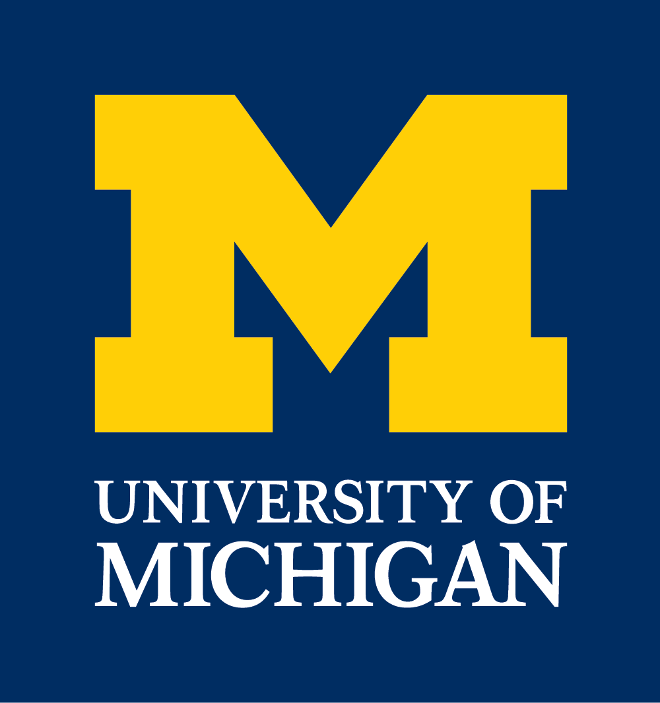

Hello, my name is Zach Boulanger, and in April 2017 I will be graduating from the University of Michigan with a Bachelor's Degree in Computer Science and minors in German and Multidisciplinary Design. While I have gathered a lot of professional and academic experience in software development in the application and web environments, I'm most passionate about working in interdisciplinary teams and being able to flex both my creative and technical muscles. I am currently very interested in learning more about entry-level positions with companies that share these ideals.
Education

University of Michigan (Fall 2012 - Spring 2017)
Bachelor of Science in Engineering, Computer ScienceMinors in German and Multidisciplinary Design
GPA: 3.08/4.00
Favorite Coursework: Web Databases and Information Systems, Mobile Phone Development and Orchestra, Computer Security, Multidisciplinary Software Development, Graphic Design, Artificial Intelligence, Doing Business in German
Skills
List skills + icons + level of ability
Experience
show with tab and hidden content. click a tab to show that content, click next to show that, etc. Split into categories: Work Experience, Leadership Experience In each category: work: Consumers Energy, Thomson Reuters, Arts Engine leadership: Living Arts, A2RU Conferences, OUT Technology Conference Each tab/section of content will include: Title/Name, Dates I was with, Link to website of place (in text, not title), short (1 sentence ideal, maybe 2) description of what it is, then last what I did.
Projects
MDP/ProQuest Project, This Website, AE Website MDP project, this website, A2RU website // make sure to ask MDP PQ and A2RU how much I can include on my website about what I've been working. Pictures allowed? Descriptions? etc Talk about process, etc Icons on left and text on rest, click icon to see/change
Contact
If you'd like to get in touch with or learn more about me, feel free to send me an email or visit my profiles on LinkedIn or Github.
((insert icons + email, linkedin, and github links))